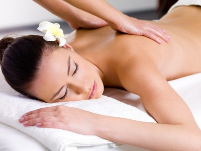
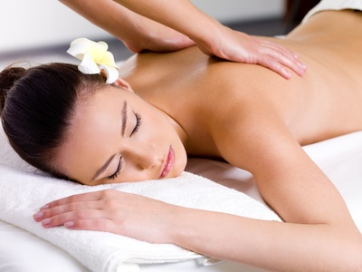
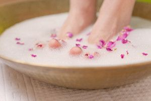
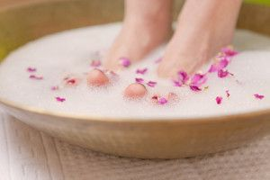
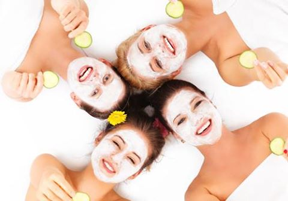
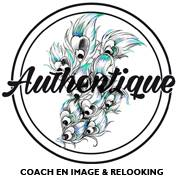

{kind=link}
{kind=link}
Je réalise des maquillages de jour, de soirée et de mariage.
Ainsi, à tout moment, soyez BELLE et GRACIEUSE pour dévoiler votre BEAUTE !
Bonjour et bienvenue.
Je suis masseuse esthéticienne sur Istres et ses environs.
Vous souhaitez une prestation de qualité, réalisée avec douceur et efficacité ?
Je saurai prendre soin de vous et vous chouchouter.
Découvrez l'ensemble de mes prestations en détail ainsi que leurs tarifs.

Exfoliant naturel pour le visage. La haute nutrition apportée par sa concentration de jus d’Aloé Véra bio, adoucit l’exfoliation qui purifie naturellement les cellules mortes de l’épiderme, grâce à l’action de la poudre de bambou. Nettoyage doux et sensation de confort.
Crème enrichie en huile de tournesol aux vertus assouplissantes et unifiantes pour la peau. Avec sa composition en Vitamine E et en jus d’Aloé Véra bio elle offre un soin anti-âge préventif par ses actions anti-oxydantes et hautement nutritives.
Masque pour peau normale à très sèche, fortement concentrée en glycérine végétale et en jus d’Aloé Véra bio, aux propriétés hautement nutritives, en laissant une peau douce et parfumée. L’extrait de mauve et l’eau de rose apportent une sensation de confort et adoucissent la peau en lui conférant un parfait éclat.
Douce et onctueuse, cette crème de gommage élimine les impuretés et cellules mortes tout en stimulant le renouvellement cellulaire. Gommage mécanique à grains fins.
Crème enrichie en huile de tournesol aux vertus assouplissantes et unifiantes pour la peau. Avec sa composition en Vitamine E et en jus d’Aloé Véra bio elle offre un soin anti-âge préventif par ses actions anti-oxydantes et hautement nutritives.
Absorbant et hydratant, ce masque affine et matifie le grain de peau, laisse la peau souple et purifiée et le teint lumineux. Pour les peaux grasses et mixtes
Affine le grain de peau, lisse, unifie le teint et apporte de l'éclat grâce à l'action enzymatique de la Keratoline et des acides de fleurs permettant d'eliminer cellules mortes et impuretés. Idéal pour les peux sensibles ou grasses, ne nécessite pas de frottement
Crème enrichie en huile de tournesol aux vertus assouplissantes et unifiantes pour la peau. Avec sa composition en Vitamine E et en jus d’Aloé Véra bio elle offre un soin anti-âge préventif par ses actions anti-oxydantes et hautement nutritives.
Pour embellir votre peau grâce à l'association d'actifs nourrissants, hydratants, régénérants et anti-oxydants: Beurre de karité, Beurre de cacao, Huile de noisette et Complexe de vitamine A, E et B5 Pour une peau plus lisse, souple et confortable. Finis les tiraillements
Affine le grain de peau, lisse, unifie le teint et apporte de l'éclat grâce à l'action enzymatique de la Keratoline et des acides de fleurs permettant d'eliminer cellules mortes et impuretés. Idéal pour les peux sensibles ou grasses, ne nécessite pas de frottement.
Crème enrichie en huile de tournesol aux vertus assouplissantes et unifiantes pour la peau. Avec sa composition en Vitamine E et en jus d’Aloé Véra bio elle offre un soin anti-âge préventif par ses actions anti-oxydantes et hautement nutritives.
Idéal pour les peaux déshydratées, sèches et sensibles, ces feuilles constituées uniquement de fibres de collagène natif permettent une hydratation intense et repulpent les tissus de la peau. Pour une peau revitalisée et jeune.
Masque remodelant à base d’alginates extraits des algues brunes. Après gélification il forme une seconde peau qui favorise la pénétration des actifs : raffermissant, hydratant - sensation agréable de fraîcheur - la peau est tonique, souple et douce. S’utilise pour des soins anti-âges et raffermissants.
 

Active la circulation sanguine. Les cristaux de sucre offrent une exfoliation naturelle en réduisant les risques d'irritation tandis que le concombre adoucit l'épiderme.
Cette huile glisse sur la peau et ne colle pas. Sa texture unique se prête à des mouvements doux et relaxants, prodiguant une sensation exceptionnelle.
Argile 100% NATURELLE provenant du Maghreb, le Rassoul possède des propriétés absorbantes et astringentes. Il permet de purifier, d'adoucir l'épiderme, de réduire les sécrétions sébacées et de resserrer les pores.
Enrichi en pulpe de noix de coco aux propriétés nourrissantes et relaxantes, ce soin enveloppe le corps d'une crème gourmande et onctueuse. Ce délicieux moment de bien-être vous plongera dans un éden de douceur en revelant une peau idéalement nourrie.
Idéal pour tous types de peaux même les plus sensibles, ce lait apporte à votre peau une hydratation extrême. Il associe un agent hydratant puissant, l'Aquaxyl, à de l'huile de noix de macadamia et du beurre de karité pour envelopper votre corps d'une douceur extrême. La peau immédiatement hydratée retrouve confort et souplesse.

Active la circulation sanguine. Les cristaux de sucre offrent une exfoliation naturelle en réduisant les risques d'irritation tandis que le concombre adoucit l'épiderme.
Cette huile glisse sur la peau et ne colle pas. Sa texture unique se prête à des mouvements doux et relaxants, prodiguant une sensation exceptionnelle.
Ce masque remodelant est à base d'alginates extraits des algues brunes. Après gélification, il forme une seconde peau et favorise la pénétration des actifs raffermissants. La peau est visiblement tonifiée avec une sensation de confort unique.
Ce soin aide à corriger les effets du temps et plus spécifiquement le relâchement cutané qui marque la zone grafile du cou et du décolleté. Jour après jour, le cou devient plus ferme, plus jeune, rides et ridules sont estompées.
Active la circulation sanguine. Les cristaux de sucre offrent une exfoliation naturelle en réduisant les risques d'irritation tandis que le concombre adoucit l'épiderme.
A base d'algues et d'huiles essentielles de romarin et de citron pour un massage amincissant. Votre silhouette sera comme affinée grâce aux techniques de ce modelage et aux bienfaits de l'huile amincissante.
Ce masque chauffant combine deux actions : peeling et massage. Il permet de lisser efficacement les capitons, d'affiner et de raffermir la silhouette grâce à "l'effet sauna" et aux agents lissants. Il est formulé à partir de jeunes feuilles de thé vert qui sont reconnues pour leurs propriétés amincissantes et détoxifiantes.
Idéal pour tous types de peaux même les plus sensibles, ce lait apporte à votre peau une hydratation extrême. Il associe un agent hydratant puissant, l'Aquaxyl, à de l'huile de noix ed macadamia et du beurre de karité pour envelopper votre corps d'une douceur extrême. La peau immédiatement hydratée retrouve confort et souplesse.
Active la circulation sanguine. Les cristaux de sucre offrent une exfoliation naturelle en réduisant les risques d'irritation tandis que le concombre adoucit l'épiderme.
A base d'algues et d'huiles essentielles de romarin et de citron pour un massage amincissant. Votre silhouette sera comme affinée grâce aux techniques de ce modelage et aux bienfaits de l'huile amincissante.
La lotion fraîcheur assure un soulagement instantané sous l'action du menthol qui délasse et rafraîchit durablement. Ce produit se dilue dans l'eau et s'utilise conjointement avec l'application de bandes de crêpes imbibées de cette solution.
Tel un glaçon, ce gel non gras atténue instantanément la sensation de fatigue. Le menthol rafraîchissant dissipe immédiatement l'inconfort des jambes tandis que les huiles essentielles de sauge et de romarin procurent une agréable sensation de bien-être. Riche en minéraux et en oligo-éléments, les algues et l'eau de mer apportent des actifs dynamisant indispensables. Plus légères, les james retrouvent tout leur confort.
Cette huile connue pour sa texture douce et onctueuse se prête à des mouvememnts doux et relaxants. Le massage californien est une approche globale qui vise autant la détente que l'éveil d'une conscience psychocorporelle. Ce massage utilise de longs mouvements lents et fluides qui permettent une profonde relaxation physique et psychique.
Partant d'effleurages doux, enveloppants et relaxants, les manoeuvres s'enchaînent et s'intensifient pour soulager les tensions plus profondes. Cela peut faire surgir et libérer des émotions cachées, inscrites dans la mémoire corporelle. Plus la personne massée s'abandonne à l'expérience, plus elle s'ouvre à ce que le massage californien qualifie de toucher du coeur.

Epilation à la cire chaude sans bande pour les zones sensibles et avec bandes pour le reste. Vos poils repoussent plus lentement, seront moins nombreux et plus doux.

 

Vos mains et vos pieds méritent, tout autant que votre visage, d'être chouchoutés et entretenus ! Finis les tiraillements de la peau, les ongles cassés, les cornes sous les pieds !!
Je vous propose des soins adaptés pour soigner et embellir vos mains et vos pieds. Pour une manucure ou une pédicure, vous aurez soit un gommage, un modelage et une pose de masque nourrissant, soit un soin des ongles avec un modelage.
| Maquillage jour | 15 € |
| Maquillage soirée | 25 € |
| Maquillage mariée | 30 € |
| Soin hydratant 1h15 | 38 € |
| Soin regénérant 1h15 | 46 € |
| Soin purifiant 1h15 | 38 € |
| Soin dos 40 min | 42 € |
| Massage californien 1h | 42 € |
| Soin buste 40 min | 45 € |
| Soin amincissant 1h15 | 46 € |
| Soin jambes légères 1h15 | 45 € |
| Lèvres | 6 € |
| Sourcils à la pince | 7 € |
| Visage | 7 € |
| Aisselles | 8 € |
| Demi-bras | 12 € |
| Bras entiers | 14 € |
| Maillot simple | 11 € |
| Maillot brésilien | 14 € |
| Maillot intégral | 18 € |
| Torse | 15 € |
| Ventre | 15 € |
| Dos | 15 € |
| Demi-jambes | 13 € |
| Jambes entières | 18 € |
| Beauté des mains | 21 € |
| Beauté des pieds | 25 € |
| Pose de vernis | 8 € |
| Epilation - soins du visage - maquillage et manucure | 100 € |
Je me présente, je m’appelle Mélanie et je vous propose des soins esthétiques à domicile à Istres et ses alentours.
Je me déplace avec ma table de massage ainsi que tout le matériel nécessaire.
Le plus important à mes yeux, c’est vous, votre satisfaction, votre bien-être et que vous passiez un agréable moment !
Je vous propose, en plus de mes prestations, des * GIRL PARTY * avec 50% DE REMISE pour l'hôtesse.
Aimeriez-vous être chouchoutées (massage, manucure, soins...) dans une ambiance détente et rigolade au cours d'une soirée à la maison entre amies, lors d'un enterrement de vie de jeune fille original ou tout simplement avant de sortir en soirée ?
J'ai créé pour vous la Girly Party !
Cette prestation commence à partir de 3 personnes, pour un tarif minimum de 30 € par personne seulement selon les soins souhaités.
Au-delà de 150 € de prestation commune, bénéficiez toutes de 10% DE REMISE sur vos soins.
Je travaille en partenariat avec d’autres entreprises avec qui je crée des événements BEAUTE, BIEN-ETRE et SPORT.
{kind=link}
{kind=link}
{kind=link}
{kind=link}
{kind=link}
{kind=link}
{kind=link}
{kind=link}
{kind=link}